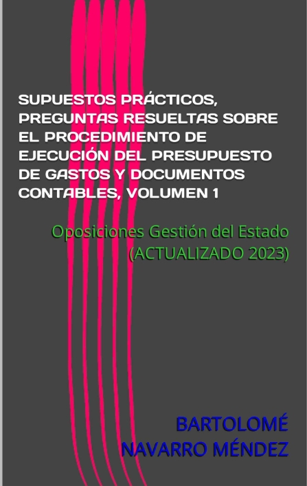
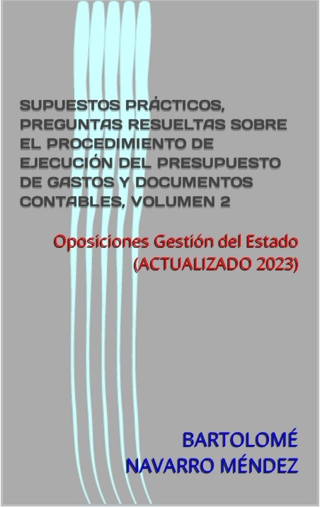

Procedimiento de ejecución del presupuesto de gastos y documentos contables. Volumen 1.
Estos dos libros (volúmenes 1 y 2) se encuentran actualizados a los últimos cambios normativos introducidos por la Ley 31/2022 de PGE para 2023 y se actualizará si se producen más cambios en adelante.
En ellos se tratan diversos aspectos relacionados con el procedimiento de ejecución del presupuesto de gastos.
Preguntas sobre la aprobación, compromiso, reconocimiento de la obligación, propuesta de pago y el pago en sí mismo, suelen aparecer en las preguntas de los supuestos prácticos de las oposiciones al Cuerpo de Gestión de la Administración Civil del Estado, tanto por ingreso libre como por promoción interna.
Previamente a la respuesta en sí a la pregunta, el autor comenta los aspectos más importantes acerca del tema sobre el que versa la pregunta.
A continuación, se responde a la pregunta siguiendo siempre el mismo esquema:
– Número de la pregunta.
– Normativa aplicable.
– Breve resumen.
– Introducción.
– Respuesta adaptada al enunciado de la pregunta.

Procedimiento de ejecución del presupuesto de gastos y documentos contables. Volumen 2.
Estos dos libros (volúmenes 1 y 2) se encuentran actualizados a los últimos cambios normativos introducidos por la Ley 31/2022 de PGE para 2023 y se actualizará si se producen más cambios en adelante.
En ellos se tratan diversos aspectos relacionados con el procedimiento de ejecución del presupuesto de gastos.
Preguntas sobre la aprobación, compromiso, reconocimiento de la obligación, propuesta de pago y el pago en sí mismo, suelen aparecer en las preguntas de los supuestos prácticos de las oposiciones al Cuerpo de Gestión de la Administración Civil del Estado, tanto por ingreso libre como por promoción interna.
Previamente a la respuesta en sí a la pregunta, el autor comenta los aspectos más importantes acerca del tema sobre el que versa la pregunta.
A continuación, se responde a la pregunta siguiendo siempre el mismo esquema:
– Número de la pregunta.
– Normativa aplicable.
– Breve resumen.
– Introducción.
– Respuesta adaptada al enunciado de la pregunta.
Esta serie temática de libros para preparar el supuesto de gestión financiera de las oposiciones al Cuerpo de Gestión de la Administración Civil del Estado, está compuesta por los siguientes 15 libros:
– Entender la vinculación y las transferencias de crédito.
– Supuestos prácticos, preguntas resueltas sobre el Presupuesto, Aprobación y Estructura.
– Supuestos prácticos, preguntas resueltas sobre vinculación y transferencias de crédito.
– Supuestos prácticos, preguntas resueltas sobre otras modificaciones presupuestarias distintas de las transferencias.
– Supuestos prácticos, preguntas resueltas sobre el procedimiento de ejecución del presupuesto de gastos y documentos contables, volúmenes 1 y 2.
– Supuestos prácticos, preguntas resueltas sobre el control de la ejecución del presupuesto
– Supuestos prácticos, preguntas resueltas sobre el sistema de Anticipos de Caja Fija.
– Supuestos prácticos, preguntas resueltas sobre el sistema de Pagos a Justificar.
– Supuestos prácticos, preguntas resueltas sobre la Ley 9/2017, de Contratos del Sector Público, volúmenes 1, 2 y 3
– Supuestos prácticos, preguntas resueltas sobre la Ley General de Subvenciones.
– Supuestos prácticos, preguntas resueltas sobre distintos aspectos del temario de gestión financiera de Gestión, volúmenes 1 y 2.